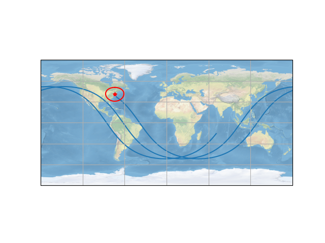

Note
Click here to download the full example code
Satellite ground track
from datetime import datetime, timezone
import numpy as np
from numpy import cos, sin, sqrt, exp, pi
from matplotlib import pyplot as plt
from blocksim.Simulation import Simulation
from blocksim.constants import Req, omega
from blocksim.source.Satellite import SGP4Satellite
from blocksim.graphics.EarthPlotter import EarthPlotter
pt = (-74.0542275, 40.7004153)
tsync = datetime(year=2022, month=1, day=1, hour=13, tzinfo=timezone.utc)
iss = SGP4Satellite.fromTLE(tsync=tsync, tle_file="iss.tle")
sim = Simulation()
sim.addComputer(iss)
ns = 200
tps = np.linspace(0, 14400, ns)
sim.simulate(tps, progress_bar=False)
log = sim.getLogger()
lon = log.getValue("deg(iss_subpoint_lon)")
lat = log.getValue("deg(iss_subpoint_lat)")
fig = plt.figure()
ep = EarthPlotter()
axe = ep.createAxe(fig)
ep.plotGroundTrack(axe, lon, lat)
ep.plotDeviceReach(axe, coord=pt, elev_min=pi / 8, sat_alt=600e3, color="red")
ep.plotPoint(axe, coord=pt, marker="*", color="red")
plt.show()
Total running time of the script: ( 0 minutes 0.239 seconds)